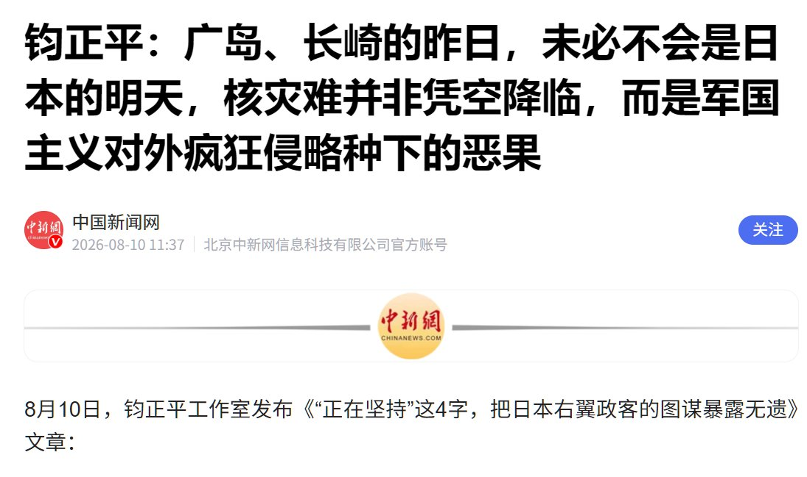

Wesley
@Wesley10032
RT @Finding8964: 8月10日，钧正平工作室发布文章，标题就足够骇人听闻：《广岛、长崎的昨日，未必不会是日本的明天》。我反复看了三遍，确认这不是某个自媒体的疯话，而是来自中国人民解放军新闻传播中心主管的官方平台。一个自称“千钧重任、正义担当、平和理性”的军媒工作室…

Finding🇨🇦🇺🇸
@Finding8964
8月10日，钧正平工作室发布文章，标题就足够骇人听闻：《广岛、长崎的昨日，未必不会是日本的明天》。我反复看了三遍，确认这不是某个自媒体的疯话，而是来自中国人民解放军新闻传播中心主管的官方平台。一个自称“千钧重任、正义担当、平和理性”的军媒工作室，在广岛核爆81周年的节点，公然对一个无核 https://t.co/jqP8hBS6uE